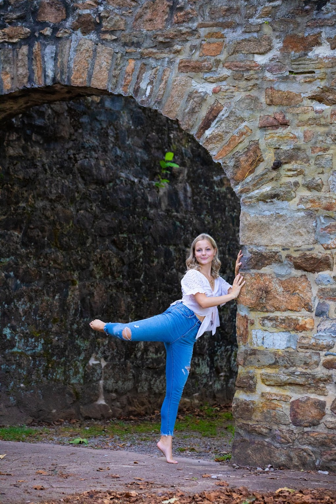
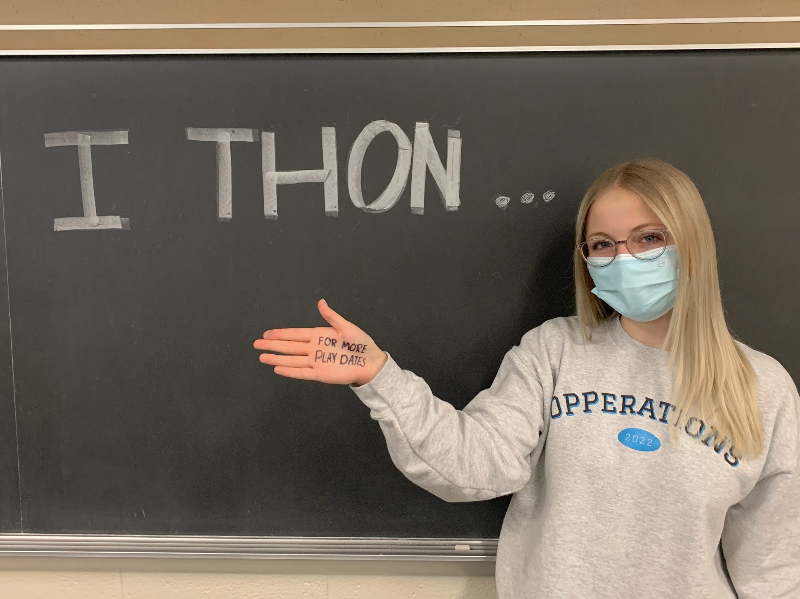
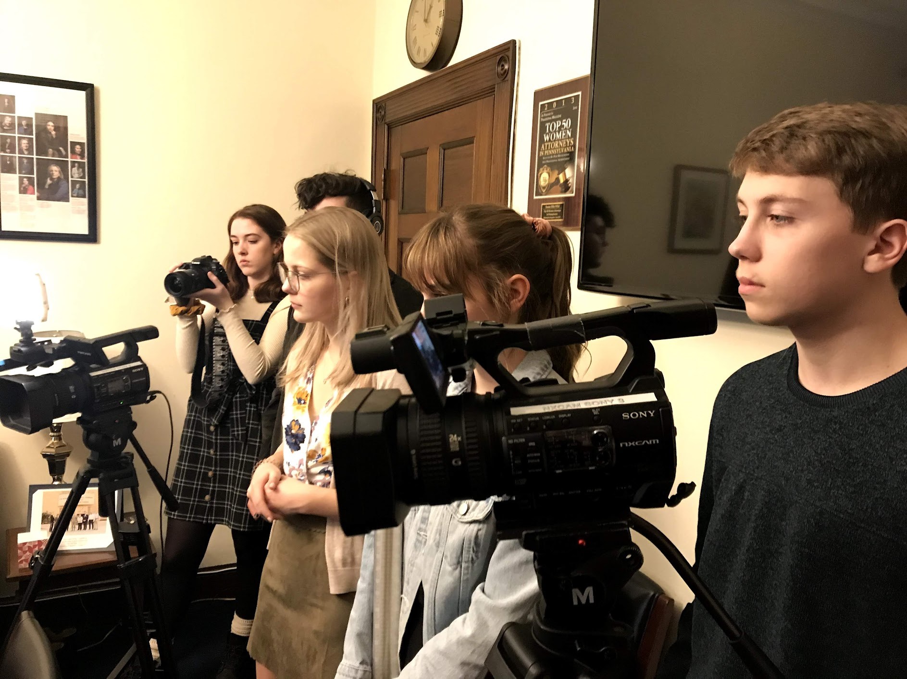
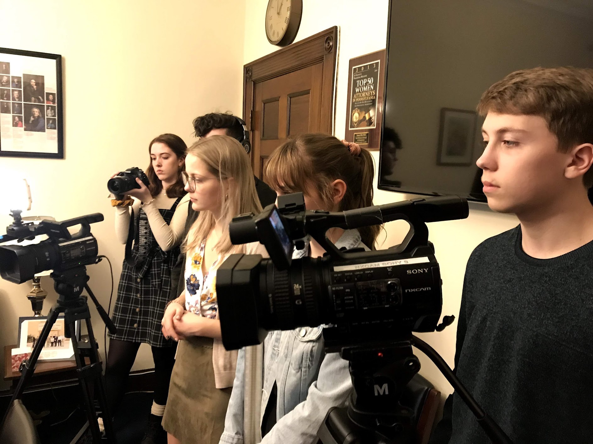

Hobbies & Clubs

I have been a dancer since I was 5 years old. At Penn State, I'm part of a dance org called Vole! In this club, I've held the position of social chair and have helped plan multiple events like formals and homecoming.
THON is the largest student-run philanthropy in the country and I've been lucky enough to volunteer in high school and now for the past 2 years at Penn State. We raise money for children and families battling childhood cancer. Last year, we were able to raise over $13 million FTK!
 
